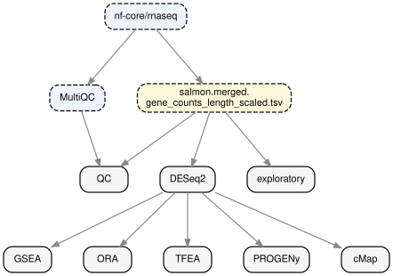

Bulk RNA-seq Analyzer Workflow


<sub>EN · 한국어 </sub>
nf-core/rnaseq의 salmon gene-count 출력을 입력으로 받아, MultiQC, DESeq2, GSEA(MsigDB), ORA(ClusterProfiler), TFEA(CollecTRI), PROGENy pathway scoring, L2S2 (LINCS L1000) cMap 결과를 HTML 리포트로 생성하는 Snakemake 파이프라인
Workflow

Quick start
nf-core/rnaseq 분석 결과물 두 개가 필요:
salmon.merged.gene_counts_length_scaled.tsv— count 행렬 (헤더:gene_id+gene_name+ 샘플 1열씩)- MultiQC stats 디렉터리 —
multiqc_general_stats.txt가 직접 들어있는 바로 그 폴더를 지정. 파이프라인은 하위 폴더를 재귀 탐색하지 않음.- nf-core/rnaseq →
multiqc/star_salmon/multiqc_report_data/를 그대로 지정 (상위multiqc/또는multiqc/star_salmon/는 불가) - 일반 MultiQC →
multiqc_data/ multiqc_report.html파일이나multiqc_report_plots/폴더는 아님
- nf-core/rnaseq →
Colab에서 실행

로컬 실행(네이티브)
입력 데이터를 프로젝트 디렉토리 아래에 두고 init 단계에서 정확한 경로를 입력한다.
# 1. Snakemake 설치 (Python venv)
python3 -m venv .venv
.venv/bin/pip install snakemake pandas
# 2. config 생성
# 위 두 입력 파일 경로와 샘플·contrast 정보를 프롬프트로 입력.
# config/config.yaml, config/samples.tsv, config/contrasts.tsv 생성.
.venv/bin/python workflow/scripts/init_project.py
# 3. dry-run 확인 (선택 — 본 실행 전 DAG 검증)
.venv/bin/snakemake \
--snakefile workflow/Snakefile \
--configfile config/config.yaml \
--use-conda -n
# 4. 실행
.venv/bin/snakemake \
--snakefile workflow/Snakefile \
--configfile config/config.yaml \
--use-conda --cores allHTML Report는 results/report/report.html에 생성됨.
로컬 실행(Docker)
Docker volume을 바인드할 디렉터리에 counts TSV와 multiqc_data/를 둔다. 동일한 이미지가 세 가지 서브커맨드를 제공: init이 config 생성, 기본 커맨드가 파이프라인 실행, jupyter가 JupyterLab 실행.
# 1. config 생성 (샘플 정보 입력)
docker run --rm -it \
-v "$PWD":/project \
ghcr.io/artblakey19/bulk-rnaseq:latest init
# 2. 생성된 config로 파이프라인 실행
docker run --rm \
-v "$PWD":/project \
ghcr.io/artblakey19/bulk-rnaseq:latest \
--configfile config/config.yaml --cores all
# 3. (선택) JupyterLab으로 결과 interactive 탐색
docker run --rm \
-v "$PWD":/project \
-p 8888:8888 \
ghcr.io/artblakey19/bulk-rnaseq:latest jupyterJupyter 사용 시: 컨테이너 실행 후 터미널에 출력되는 http://127.0.0.1:8888/lab?token=... URL을 브라우저에 붙여넣고 notebooks/explore.ipynb를 연다. Snakemake 전체 파이프라인을 재실행할 필요 없이 plot label·cutoff 등을 자유롭게 조정 가능.
입력 파일
| 파일 | 용도 |
|---|---|
config/config.yaml |
전역 설정: 경로, DE·enrichment cutoff, TF/pathway 도구, cMap 서비스. |
config/samples.tsv |
컬럼:sample, condition, replicate, batch. |
config/contrasts.tsv |
컬럼:contrast_id, factor, numerator, denominator, description. |
<counts>.tsv |
nf-core/rnaseq의 salmon.merged.gene_counts_length_scaled.tsv (1열=gene_id Ensembl, 2열=gene_name HGNC). |
| MultiQC stats 디렉터리 | multiqc_general_stats.txt(또는 .tsv)가 직접 들어있는 폴더. 재귀 탐색 안 함. nf-core/rnaseq는 multiqc/star_salmon/multiqc_report_data/ (상위 multiqc/·multiqc/star_salmon/ 는 불가), 일반 MultiQC는 multiqc_data/. general_stats 만 필수이며, 같은 폴더에 있는 선택 파일들 — multiqc_rseqc_infer_experiment.txt, multiqc_rseqc_read_distribution.txt, multiqc_dupradar.txt — 이 있으면 strandedness / exonic % / dupRadar slope 컬럼까지 자동 채움. |
리포트 섹션
| 단계 | 방법 | 주 산출물 |
|---|---|---|
| QC | MultiQC로 FastQC / STAR / Salmon / RSeQC metric 집계. | 샘플별 QC 표, library-size·mapping-rate plot. |
| 탐색 분석 | VST 변환 후 top-500 variable gene PCA, sample correlation. | PCA, scree, dendrogram, correlation heatmap. |
| 차등발현 | DESeq2 Wald test + apeglm LFC shrinkage. | DEG 요약, volcano, MA, top-30 DEG heatmap, 전체 결과. |
| Gene-set enrichment (GSEA) | pre-ranked GSEA (ranking matric: Wald stat). | MSigDB H / C2:CP (Reactome, WikiPathways, PID, BioCarta) / C2:CGP / C6 |
| Over-representation (ORA) | clusterProfiler::enricher() + KEGG live REST. |
DB(GOBP, KEGG, Reactome, Hallmark)별 top-10 up/down |
| TFEA | decoupler + ULM + CollecTRI | Top-30 TF + 전체 score |
| Pathway 활성도 | decoupler + PROGENy | z-scored heatmap by sample + treated−control delta (Wilcoxon). |
| cMap | Up/down DEG signature로 L2S2 paired query. | Ranked perturbagen |
| Audit trail | Config snapshot, MD5, session info | 재현성 정보 |
저장소 구조
Bulk-RNAseq/
├── config/
│ ├── config.yaml # 전역 설정
│ ├── samples.tsv # 샘플 메타데이터
│ └── contrasts.tsv # DE 비교 정의
├── workflow/
│ ├── Snakefile # 파이프라인 진입점
│ ├── rules/
│ │ ├── qc.smk
│ │ ├── de.smk
│ │ ├── enrichment.smk
│ │ └── report.smk
│ ├── envs/ # 단계별 conda env yaml
│ └── scripts/ # R / python scripts
├── report/
│ ├── template.qmd # Quarto 리포트 템플릿
│ ├── sections/ # 각 분석 단계별 코드
│ └── assets/ # CSS, JS
├── results/ # 파이프라인 출력
├── README.md
└── README.ko.mdReference
정량화·카운트·QC
- Salmon — Patro R. et al. Salmon provides fast and bias-aware quantification of transcript expression. Nat Methods 14, 417–419 (2017). https://doi.org/10.1038/nmeth.4197
- tximport — Soneson C., Love M.I., Robinson M.D. Differential analyses for RNA-seq: transcript-level estimates improve gene-level inferences. F1000Research 4:1521 (2015). https://doi.org/10.12688/f1000research.7563.2
- MultiQC — Ewels P. et al. MultiQC: summarize analysis results for multiple tools and samples in a single report. Bioinformatics 32(19), 3047–3048 (2016). https://doi.org/10.1093/bioinformatics/btw354
차등발현
- DESeq2 — Love M.I., Huber W., Anders S. Moderated estimation of fold change and dispersion for RNA-seq data with DESeq2. Genome Biol. 15, 550 (2014). https://doi.org/10.1186/s13059-014-0550-8
- apeglm — Zhu A., Ibrahim J.G., Love M.I. Heavy-tailed prior distributions for sequence count data: removing the noise and preserving large differences. Bioinformatics 35(12), 2084–2092 (2019). https://doi.org/10.1093/bioinformatics/bty895
Gene-set 분석
- GSEA(Method) — Subramanian A. et al. Gene set enrichment analysis: a knowledge-based approach for interpreting genome-wide expression profiles. PNAS 102(43), 15545–15550 (2005). https://doi.org/10.1073/pnas.0506580102
- fgsea — Korotkevich G. et al. Fast gene set enrichment analysis. bioRxiv (2021). https://doi.org/10.1101/060012
- clusterProfiler 4.0 — Wu T. et al. clusterProfiler 4.0: a universal enrichment tool for interpreting omics data. The Innovation 2(3), 100141 (2021). https://doi.org/10.1016/j.xinn.2021.100141
- MSigDB / Hallmark — Liberzon A. et al. The Molecular Signatures Database (MSigDB) Hallmark Gene Set Collection. Cell Systems 1(6), 417–425 (2015). https://doi.org/10.1016/j.cels.2015.12.004
조절·pathway 활성도 추정
- decoupleR / decoupler-py — Badia-i-Mompel P. et al. decoupleR: ensemble of computational methods to infer biological activities from omics data. Bioinformatics Advances 2(1), vbac016 (2022). https://doi.org/10.1093/bioadv/vbac016
- CollecTRI — Müller-Dott S. et al. Expanding the coverage of regulons from high-confidence prior knowledge for accurate estimation of transcription factor activities. Nucleic Acids Research gkad841 (2023). https://doi.org/10.1093/nar/gkad841
- PROGENy — Schubert M. et al. Perturbation-response genes reveal signaling footprints in cancer gene expression. Nat Commun 9, 20 (2018). https://doi.org/10.1038/s41467-017-02391-6
cMap / connectivity
- L1000 Connectivity Map — Subramanian A. et al. A next generation Connectivity Map: L1000 platform and the first 1,000,000 profiles. Cell 171(6), 1437–1452 (2017). https://doi.org/10.1016/j.cell.2017.10.049
- L2S2 — L1000 signature 검색 (Ma’ayan Lab). https://l2s2.maayanlab.cloud